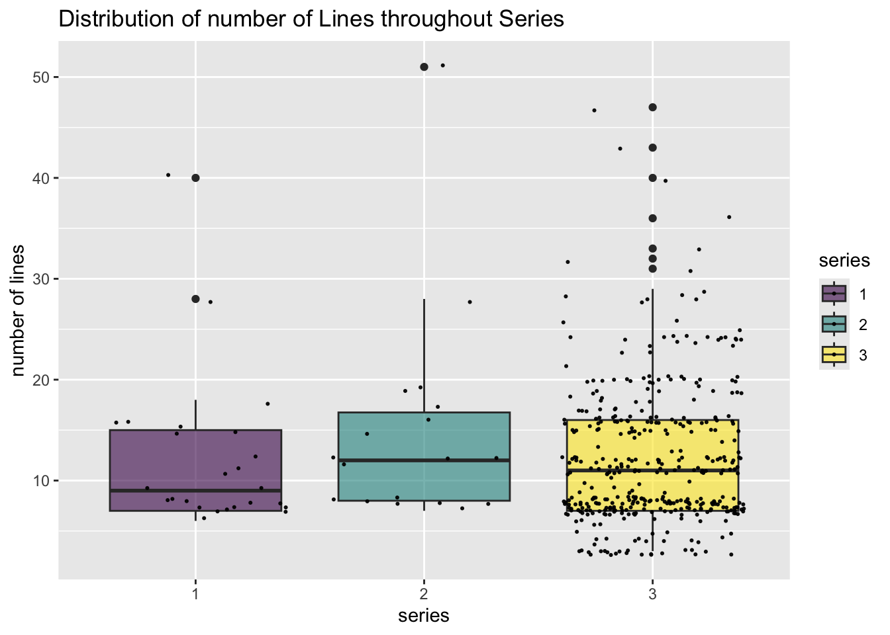

library(tidyverse)
library(viridis)
library(tidytext)
library(wordcloud2)
library(spacyr)Dickinson’s Poems
This is analysis of data set of all of Emily Dickinson’s poems, which can be found at https://www.gutenberg.org/files/12242/12242-h/12242-h.htm.
library(DickinsonPoems)
filename <- list.files(system.file("extdata", package = "DickinsonPoems"))
poems <- vector("character", length(filename))
for(i in 1:length(filename)){
lines <- readLines(paste(system.file("extdata", package = "DickinsonPoems"), filename[i], sep = "/"))
lines <- lines[-c(1:2)]
lines <- lines[str_detect(lines, "^ $", negate = TRUE)]
poems[i] <- str_c(lines, sep = "", collapse = "| ")
}
poems <- data.frame(id = str_remove(str_sub(filename, 15), "^0*"), series = str_sub(filename, 10, 10), poem = poems)Investigating the collection of Dickinson’s poems, I first decided to organize the data as a long data frame. Each unit of observation is a poem. The table includes three columns, the series, ID, and text of the poem for each unit of observation.
poems |> mutate(nlines = str_count(poem, "\\|")) |>
ggplot(aes(x = series, y = nlines, fill = series)) +
geom_boxplot() +
scale_fill_viridis(discrete = TRUE, alpha=0.6) +
geom_jitter(color="black", size=0.4, alpha=0.9) +
labs(
x = "series",
y = "number of lines",
title = "Distribution of number of Lines throughout Series"
)
poems |> mutate(nlines = str_count(poem, "\\|")) |>
ggplot(aes(x = series, y = nlines, fill = series)) +
geom_violin() +
scale_fill_viridis(discrete = TRUE, alpha=0.6) +
labs(
x = "series",
y = "number of lines",
title = "Distribution of number of Lines throughout Series"
)
These plots investigate the distribution of the number of lines in each poem through out each of the three series in the collection. As it turns out, the number of lines and their distribution was relatively consistent throughout series. It is notable that there are far more poems in series three than the other two. By far the most interesting detail to come out of this relatively mundane set of plots is the grouping that occurs in series three. Especially evident because of the larger sample size, there are clearly grouped tiers at 3, 7, 12, 15, 20, and 24 lines.
spacy_install()
spacy_initialize(model = "en_core_web_sm")
nouns <- unique((str_c(poems$poem) |> tolower() |>
spacy_parse(pos = TRUE) |> unnest_tokens(word, token) |>
filter(pos == "NOUN"))[["word"]])
excluded_words <- c("t", "so", "by", "be", "go", "tell")
word_freq <- data.frame(text = str_c(poems$poem)) |>
mutate(text = tolower(text)) |>
mutate(text = str_remove_all(text, '[[:punct:]]|\\|')) |>
mutate(tokens = str_split(text, "\\s+")) |>
unnest(cols = c(tokens)) |>
count(tokens) |>
arrange(desc(n)) |>
rename(word = tokens, freq = n) |>
filter(word %in% nouns) |>
filter(!word %in% excluded_words)
word_freq$word[1] <- toupper(word_freq$word[1])
wordcloud2(data = word_freq, size = 2.5)Next I wanted to investigate the content of the poems. To do this, I created a word cloud of all the nouns in Dickinson’s poetry. First, I created a new data frame using the poem strings contained in my previous data frame. The new data frame is also long. Each unit of observation is a word used in the poems, and the table includes two columns, the word and how many times it appears throughout the collection. I sepperatly used the spacyr package to create a list of all the nouns that appeared in the collection. I used this, combined with a coustom list of excluded words that slipped through spacy, to filter my data frame to only include nouns. Finally, I used the wordcloud2 package to create the wordcloud.